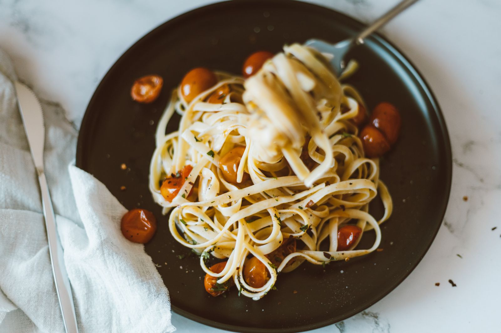
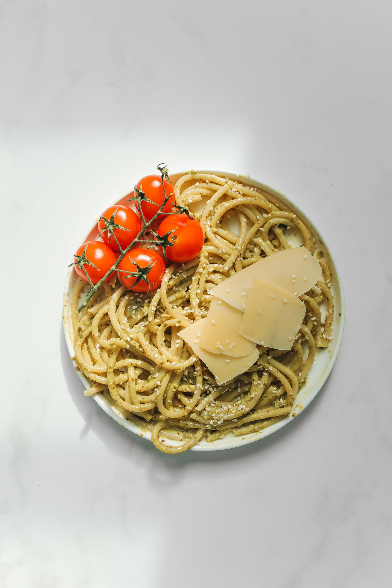
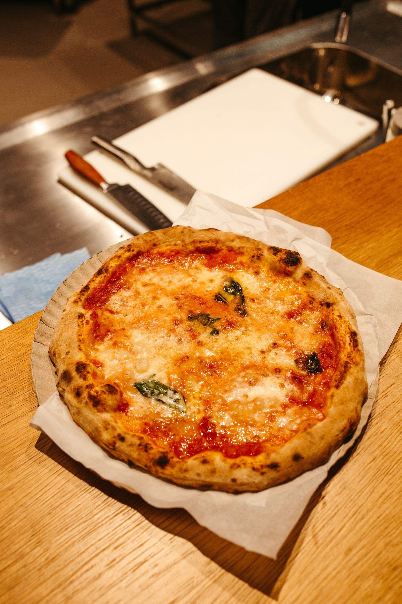
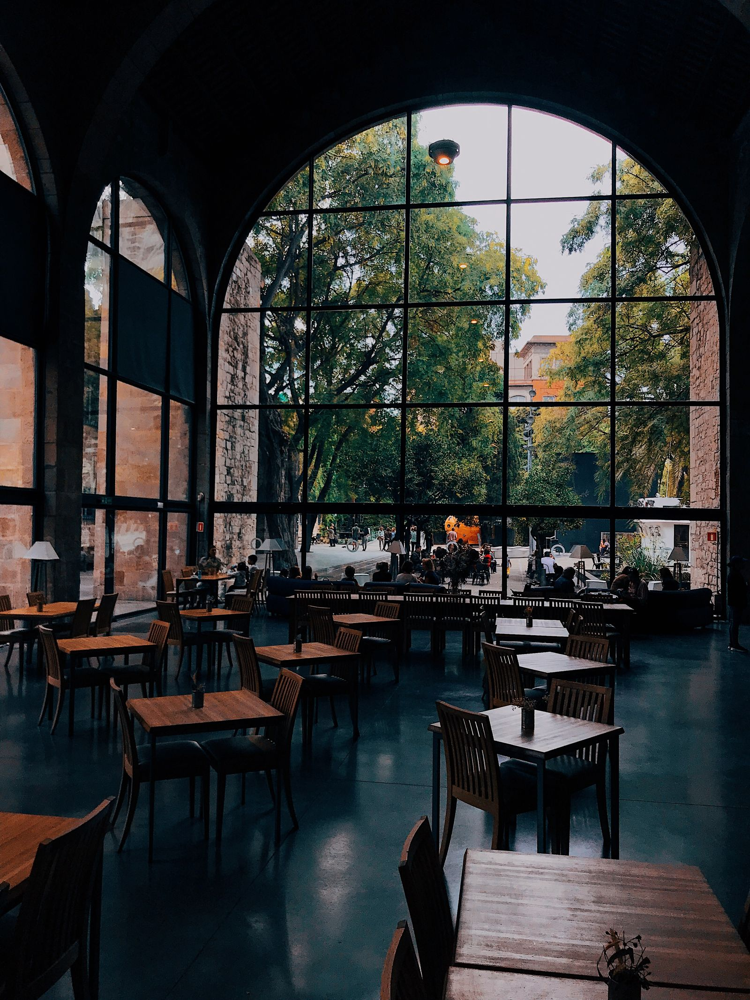
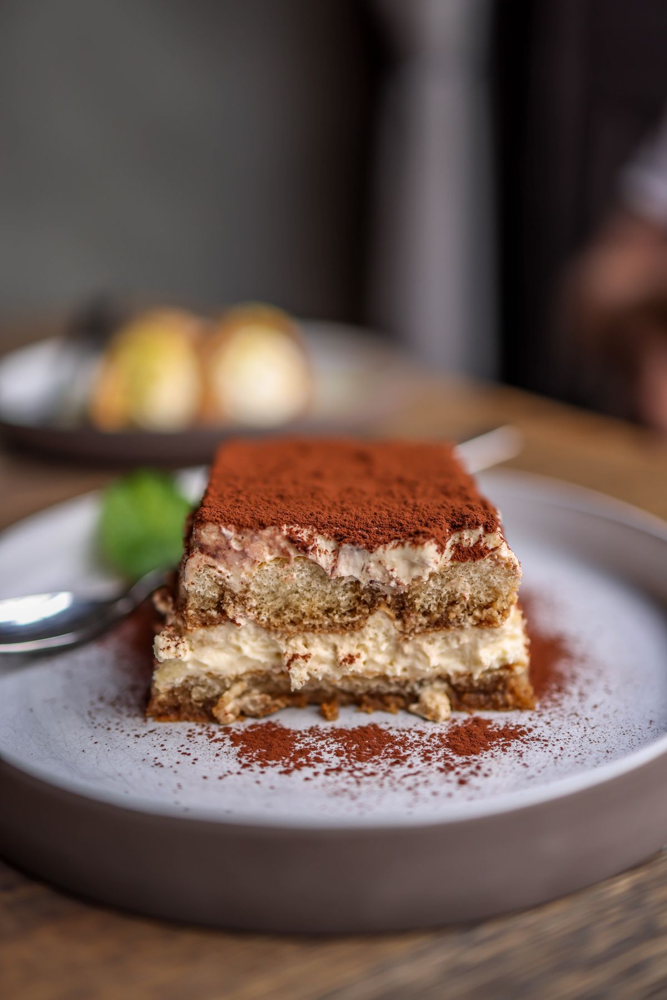

粉から、心をこめて。
エミリア＝ロマーニャの食卓に着想を得た、卵を練り込むタリアテッレ。幅広の麺にソースをまとわせます。
DAIKANYAMA, TOKYO — CUCINA ITALIANA
手打ちのパスタと、香ばしく焼き上げるピザ。イタリアの食卓がくれる幸せを、代官山で。
お料理を見る ⟶
La nostra tavola.01 — LA NOSTRA STORIA
気取らずに、けれど少し特別に。
オリーブの木陰で食卓を囲むように、心ほどけるひとときを。OLIVAは、イタリアの素朴で豊かな食文化を大切にするトラットリアです。
小麦の香りが広がるパスタ、焼きたてのピザ、季節を映すひと皿。大切な人と分かち合う、おいしい記憶をお届けします。
Benvenuti alla nostra tavola.エミリア＝ロマーニャの食卓に着想を得た、卵を練り込むタリアテッレ。幅広の麺にソースをまとわせます。
ナポリの定番に学ぶマルゲリータ。トマト、モッツァレラ、バジルを重ね、生地の香ばしさを楽しむ一枚に。
トマトの酸味、チーズの塩味、オリーブオイルの香り。素材を重ねすぎず、旬の野菜の持ち味を引き出します。
02 — I NOSTRI PIATTI
シンプルだからこそ、忘れられない味に。

PASTAバジルソースのスパゲッティに、チェリートマトと削ったチーズを添えて。

PIZZAトマト、モッツァレラ、バジル。イタリアを感じる王道の一枚。
04 — DALLA CUCINA
料理の主役は、いつも食材。素材の持ち味を引き出し、パスタの食感や焼き上がりを確かめながら、一皿ずつ仕上げます。
思わず会話が弾み、もうひと口食べたくなる。そんな食卓を目指しています。
OLIVA キッチンより Con amore.
05 — IL VINO
軽やかな白、果実味豊かな赤。イタリア各地のワインを、お料理やその日の気分に合わせて。ワインに詳しくなくても、どうぞ気軽にご相談ください。
06 — LO SPAZIO
木の温もりと、やわらかな灯りに包まれて。

A TABLE FOR YOUR OCCASION
以下は架空店舗のサンプル設定です。

PER UN GIORNO SPECIALE
お誕生日や結婚記念日に、メッセージプレートとアニバーサリーケーキをご用意。伝えたい気持ちを、一緒にかたちにします。
架空店舗のサンプルプラン・料金です。すべて税込。
おすすめ：ディナーコース ¥11,000 / お一人様
記念日サービスは追加料金で承ります。
07 — NOTIZIE
きのこの香りとパルミジャーノのコクを楽しむ、季節のひと皿です。
架空店舗のサンプルのお知らせです。
ドルチェに、20文字までのメッセージを添えます。お誕生日や結婚記念日のひとときにどうぞ。
1皿＋¥1,500（税込）。来店日の2日前までに、予約フォームで「メッセージプレート」を選び、希望のメッセージをご入力ください。
記念日サービスを見る ⟶08 — VI ASPETTIAMO
お席のご予約、記念日のご相談を承ります。